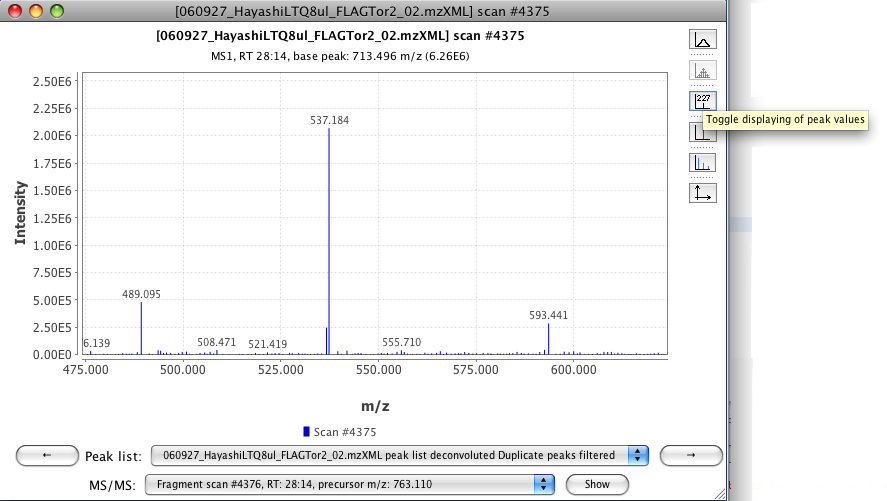

This tool displays all the ions from a selected scan. It shows a plot of two dimensions, where X axis corresponds to m/z value and Y axis is the intensity of the ion signal.
To zoom in, drag the mouse from left to right, selecting the area to zoom. To zoom out drag the zoom from right to left.
In the right part of the plot there is a toolbar. Its functionality is also included in a pop-up menu, which appears when you make right click on the plot area.
The first icon correspond to the visualization mode (centroid or continuous).


To display the data points in the plot use the second icon on the right panel.

To display the label of the data points use the third button of the right panel.

It is possible to display the selected ions to form a chromatographic peak, by default this option is activated. The selected ion appears in color red. If the user toggle the button of "Toggle displaying picked peaks", the color of the ion change to the normal color (blue) and the tool tip information also changes.


If a search of isotopes was done, is possible to visualize the predicted isotope pattern. The visualization of this pattern appears in color light green and can be toggle on/off.


The last button of the toolbar display a pop-menu which allows to set the range in both axis.

The bottom part of the Spectra plot contains information about the origin of the data (color + legend), peak lists where some of the peaks contain this spectrum, list of scans derived from an ion on this scan (fragmentation scans). There are two buttons with an arrow symbol, which allows the user to display to the next scan on time.